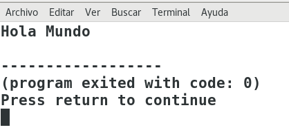

Última actualización: 2022-03-14
Cuando iniciamos en el aprendizaje de un lenguaje de programación, nuestro primer acercamiento con el lenguaje y con un editor de código es cuando realizamos el programa más simple al que llamamos "Hola Mundo" .
En este codelab aprenderás a escribir tu primer hola mundo para java y para C, y además lo podrás ejecutar.
holamundo.c
#include <stdio.h>
int main(){
printf("Hola Mundo");
return 0;
}
Guarda el código como holamundo.c, compila el código y ejecuta el código, tendrás una salida como la siguiente.

HolaMundo.java
public class HolaMundo{
public static void main (String[] args) {
System.out.println("Hola Mundo");
}
}
Guarda el código como HolaMundo.java, compila el código y ejecuta el código, tendrás una salida como la siguiente.
Has terminado con éxito el tutorial.
Ahora aprendiste a crear tu primer programa en Lenguaje C y en lenguaje Java, ahora sabes que puedes ejecutar código en C o en java usando el mismo editor de código Geany.
Puedes encontrar tutoriales de programación en mi canal de youtube : https://www.youtube.com/elprofeariel